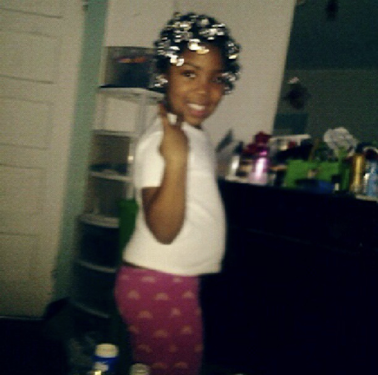
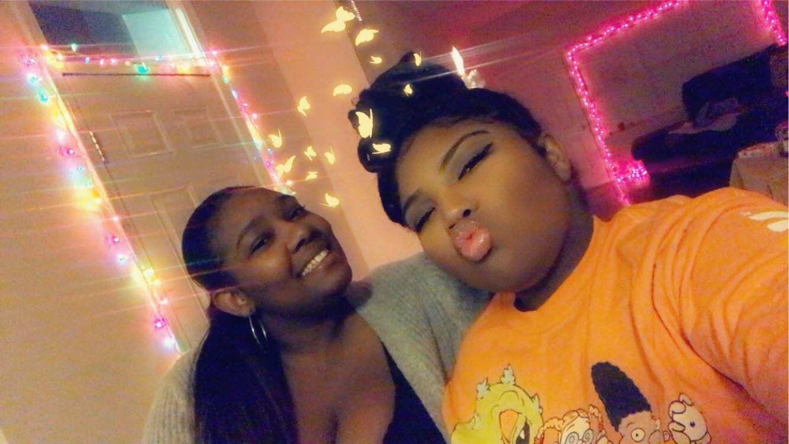

Hi i'm kaneisha i'm 15 and going into the 10th grade.i was born on march,16th,2005 and raised in baltimore. As a little girl I loved school and was actually a very good student and got really good grades I come from a big family I only really interacted with my moms side of the family so i'll tell you mostly about them I have 5 sisters which is a little diffcult to explain so I have 3 biological half sisters I'm the only sibling with a different dad which is kinda hard but my sisters have other sisters that I grew up with so I just think of them all as my sisters to make it easier for people to understand I have an up and down relationship with my family.My mom and i bump heads a lot i think its because of our signs (my moms a gemini and im a pisces) because of how much i love astrology but i also can never say that she hasnt provided for me and allowed me to become the person i am today i have a lot of cousins and just a couple months ago the most important person in my life right now was born my nephew alarik i wasnt sure if i was ready to be an aunt and am still learning but i love my nephew to death me.
My dad and I are now building a relationship (because my mom wants us to) im not apposed to having a relationship with my father but i learned to live without him and forgave him for not being here im trying to grow and i feel as if i get caught up in trying to figure out why he was gone for so long it'll take away from the progress of made with myself besides during the time he was gone (7 years ) i had an amazing stepfather he is my dad he raised me and and my sisters and has been one of my favorite people to talk to and i like to think ive helped him have more compassion for they community i love so much (lgbtqia+ community) ive started medation and learnig how to love and be at peace with myself on top of being a good student I was bullyed about my acne and weight which made me very insecure and it wasnt just at school my family would also make comments about my body i learned to use jokes to reflect from pain which is something i still do today i was in a very dark place and in making jokes about myself i became my own worst critic nothing i did was good enough for me as you know im in highschool and during my online classes me and my english teacher talked and she said that she wondered why i was so nice and helpful to my peers but was super hard on myself and i relized she was right i cared more about other people then i did myself which i thought was a good thing because it meant i was selfless but she explained that being selfish sometimes was okay and that i need to give the love and support i was giving to everyone else to myself.I had never thought of it that way so over the summer (2020) ive been working hard on figuring out who i am and how to control my emotions and be a good person .
my favorite color is purple I love seafood and mac & cheese.My biggest support systems are my sisters they love and support me even though we have some different opinions. I love art music and writing. I plan on one day moving out of baltimore but I will always have love for my city.I hope to one day run my own business i have a lot of good ideas and want to act on them soon.writing and publishing a book is also on my bucket list i'm still figuring a lot of things out and have learned that its okay to be undecide as long as i am working towards a plan.
